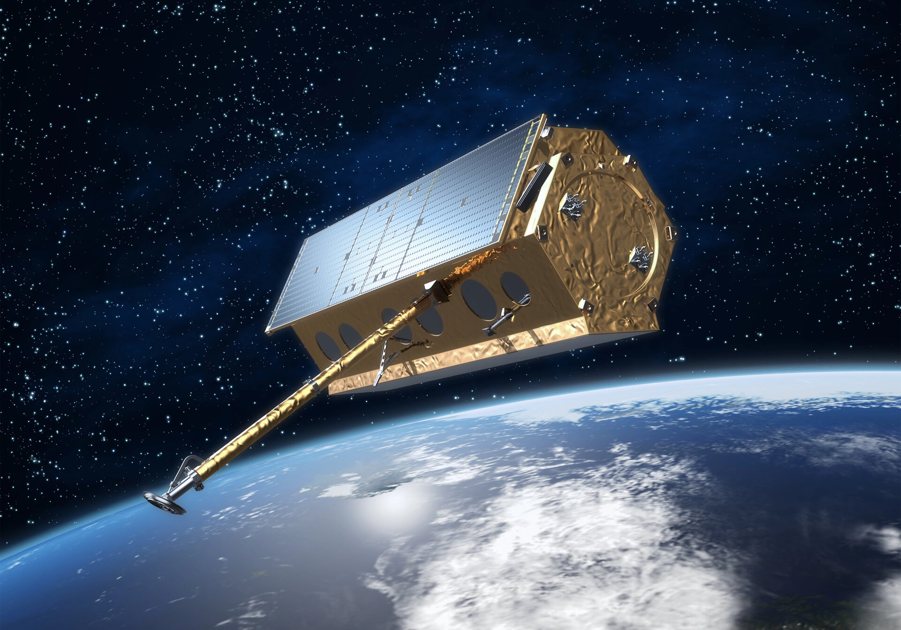
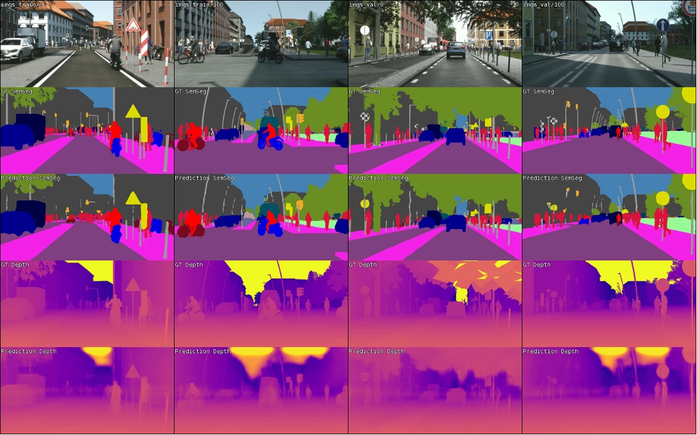
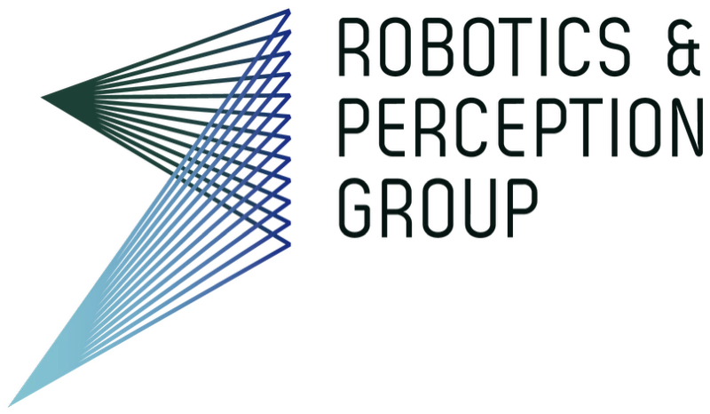
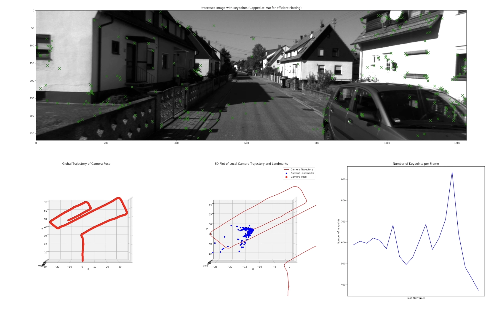
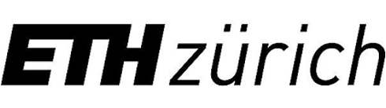
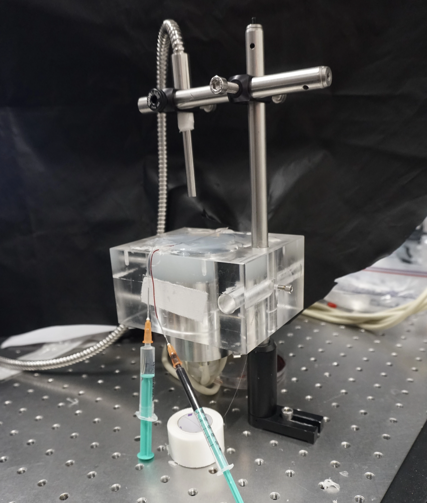
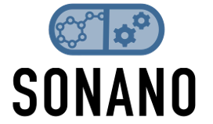

June 2025 - December 2025
AI Application Engineer
Developed deep learning models for SAR image enhancement. Working with TerraSAR-X and TanDEM-X satellite data on speckle reduction and super-resolution techniques.
March 2024 - May 2025
SAR Lab Research
Developed CNN model for automobile detection in airborne SAR imagery. Achieved 60% accuracy using deep learning for earth observation applications.

September 2024 - February 2025
Computer Vision and Artificial Intelligence for Autonomous Cars Project
Implemented computer vision algorithms for autonomous driving perception and localization. Developed models for semantic segmentation, depth estimation, and 3D object detection using multi-modal sensor fusion.


September 2024 - February 2025
Vision Algorithms for Mobile Robotics Project
Implemented a visual odometry pipeline using SIFT for robust motion estimation across KITTI and Malaga datasets. Analyzed feature tracking in dynamic scenarios. Check out the demonstration videos.


August 2023 - January 2024
Bachelor Thesis
Synthesized gold nanoparticles and analyzed photodegradation for optoacoustic imaging applications. Enhanced imaging resolution using MATLAB and Python.

September 2022 - July 2023
SONANO Project
Developed optoacoustic contrast agents for enhanced cancer detection. Processed and analyzed imaging data using advanced signal processing techniques.